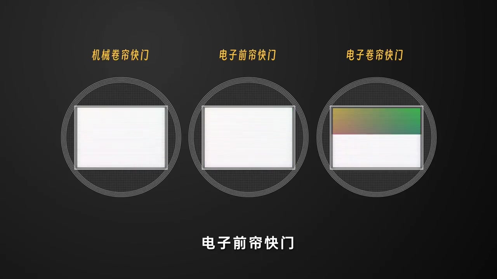
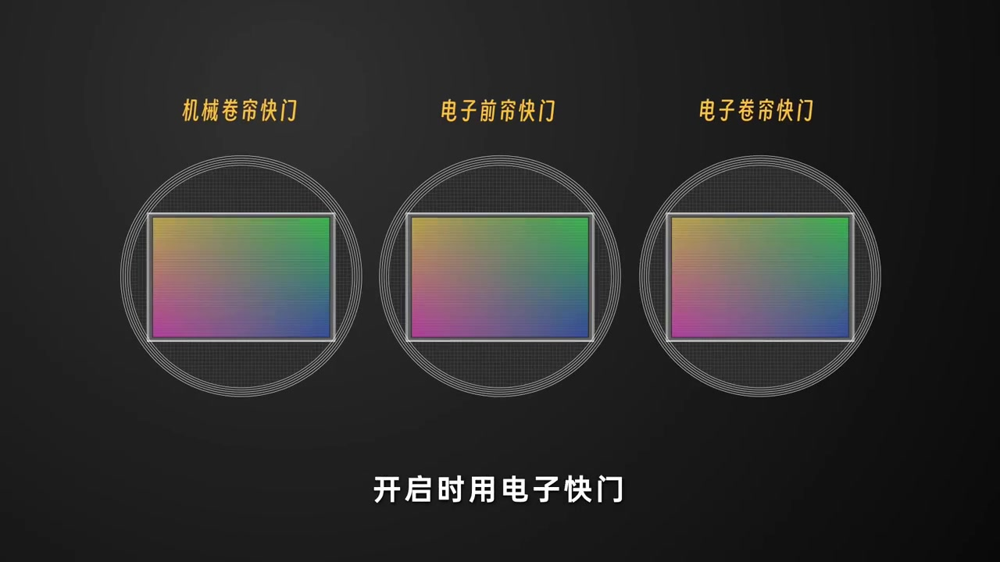
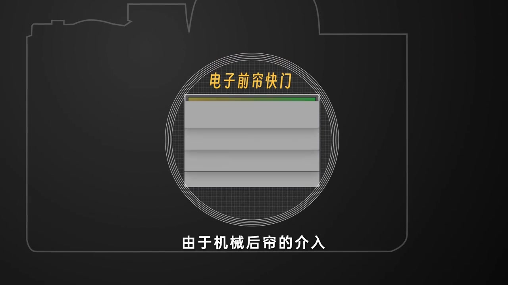
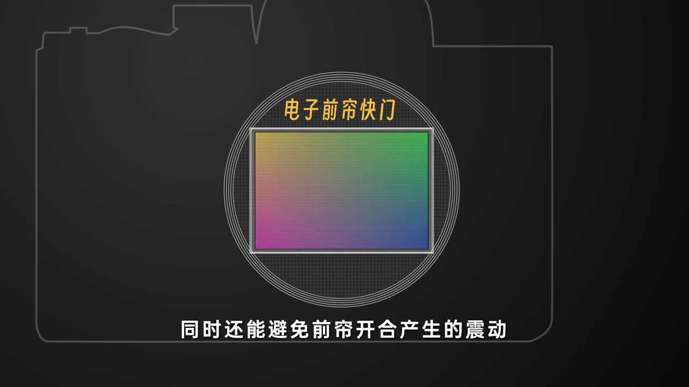
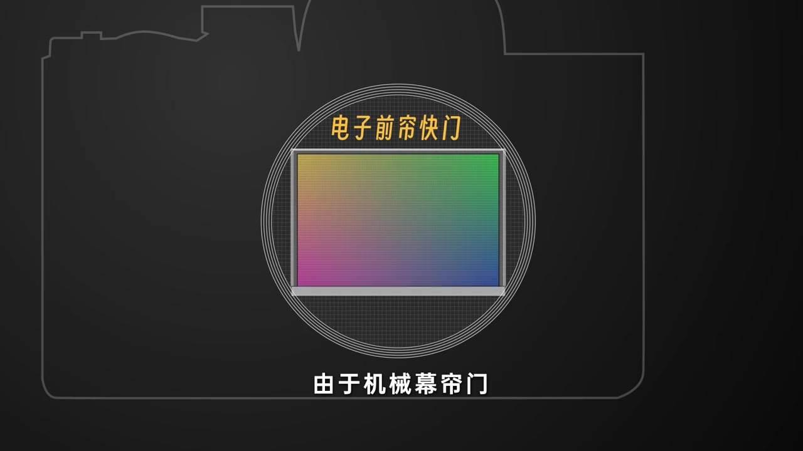
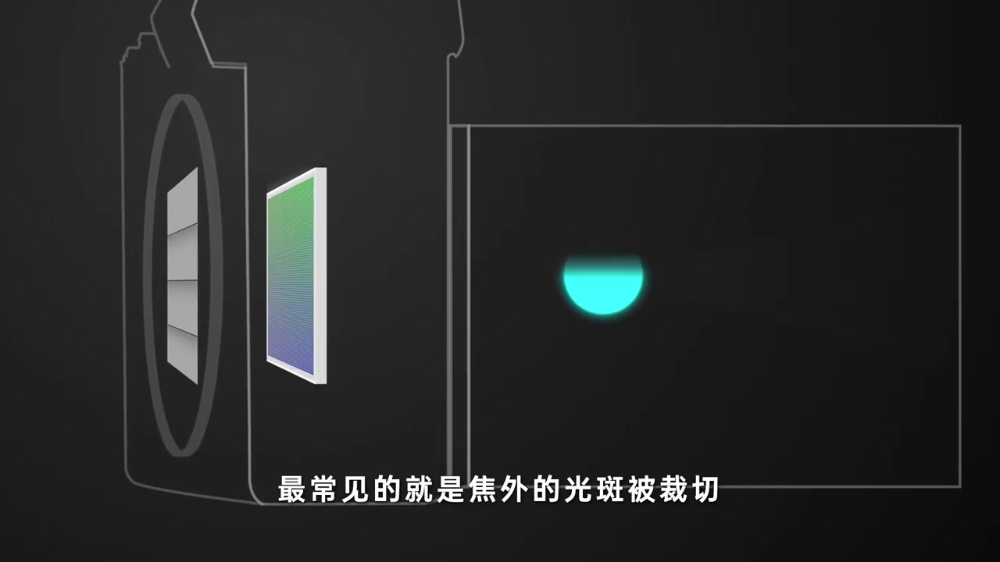
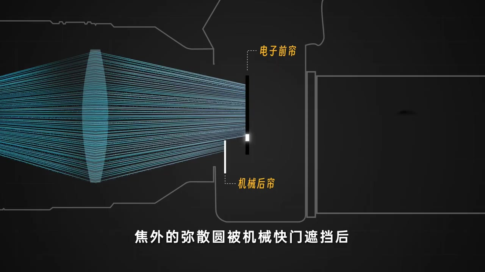
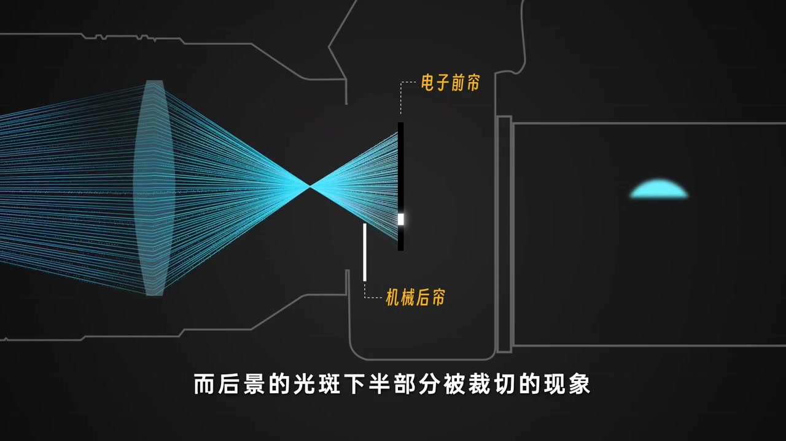

开场：三种快门并排，点名电子前帘
画面先摆出三枚圆形图标：机械卷帘快门、电子前帘快门、电子卷帘快门。右侧电子卷帘那一枚带彩色条带，暗示读出时差；中间那枚被大标题钉住——这一集要讲的是「电子前帘快门」。
旁白大意：电子前帘快门，也就是电子加机械的组合。
说明：Whisper 把「前帘」识成「前连」，「幕帘」识成「木连」，「CMOS」识成「SAMOS」，「焦外」识成「胶外」，「弥散圆」识成「迷散员」。下文叙述以可见字幕与动画为准；末尾仍完整保留全部 Whisper 分段。

开启时用电子快门，关闭时用机械后帘
三枚传感器图标同时亮起彩色像素阵列，底部字幕写清分工：开启时用电子快门。旁白接着补全后半句——关闭时使用机械后幕帘。也就是说，曝光起点由传感器电子「开门」，终点由物理后帘「关门」。
画面字幕：「开启时用电子快门」

机械后帘介入：曝光可以不受读出速度拖累
镜头切到机身线框，圆形卡口里出现四片灰色水平幕帘盖住传感器。字幕写「由于机械后帘的介入」——因为结束曝光靠的是物理后帘扫过，而不是等 CMOS 逐行读出，这种曝光方式也可以不受读出速度的影响。
画面字幕：「由于机械后帘的介入」

前帘不开合：震动少一截
幕帘动画撤掉后，彩色传感器完整露出。旁白补上第二项优点：同时还能避免前帘开合产生的震动。因为「前帘」已经改成电子完成，物理前帘不必再弹起。紧接着语气一转——有优点自然也少不了缺点。
画面字幕：「同时还能避免前帘开合产生的震动」

缺点开场：幕帘与 CMOS 不在同一平面
旁白指出：机械幕帘与控制电子快门的 CMOS 不在一个平面上。快门速度过高时，就会出现曝光不均匀。动画把传感器板微微倾斜，底部字幕直点现象——会出现曝光不均匀的现象。
旁白大意：快门速度过高时会出现曝光不均匀的现象。

最常见的坑：焦外光斑被裁切
左侧给出侧剖：幕帘在前、传感器在后；右侧直接甩出半截青色光斑——上沿被水平切平。字幕写「最常见的就是焦外的光斑被裁切」。原理段跟上：高速快门让曝光间隔变小，两种「快门」又不在同一平面，焦外的弥散圆就被机械快门遮挡。
画面字幕：「最常见的就是焦外的光斑被裁切」


收尾：前景切上半，后景切下半
同一套截面动画配上结果图：右侧光斑上半被切，字幕说「因此会出现前景的光斑上半部分被裁切」；下一拍换成下半被切的光斑，对应「后景的光斑下半部分被裁切」。43 秒短片到这里停住——电子前帘快门的收益与代价都钉在画面上了。
画面字幕：「而后景的光斑下半部分被裁切的现象」

笔记文案补充：很多相机为了轻薄取消机械快门，也有机型仅保留机械前帘；本片聚焦电子前帘组合对成像的影响，未展开具体机型菜单路径。